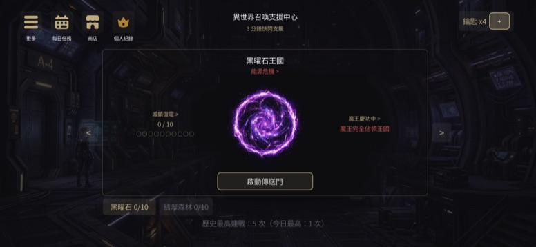
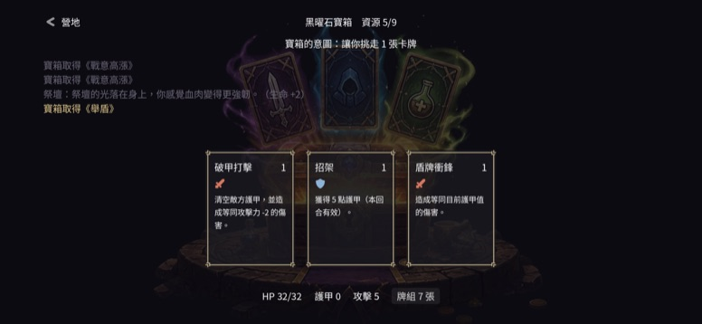
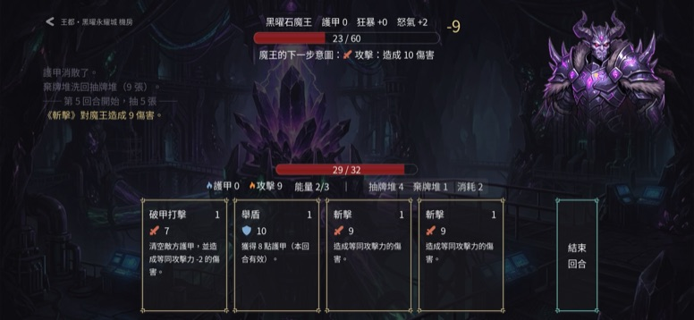
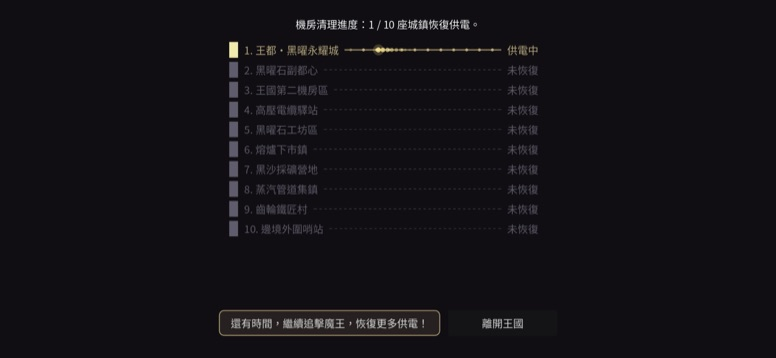
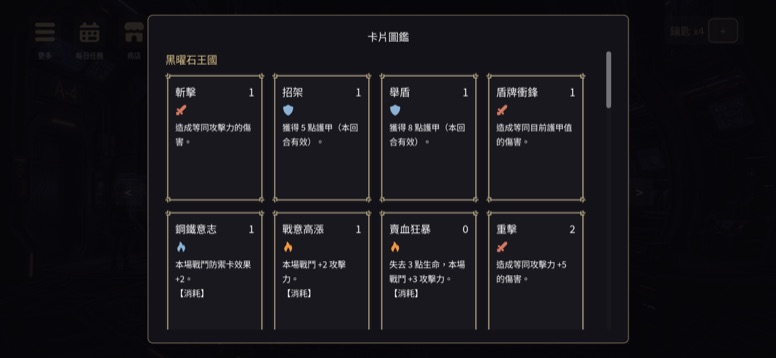

異世界救援 Isekai SOS
Roguelike 卡牌構築遊戲 · iOS / Android / Web
節奏快速、極簡風格的 Roguelike 卡牌構築遊戲。每一局先在營地開寶箱、從三張牌中選一張構築牌組，再迎戰正在吸取王國電力的魔王。戰鬥只有生命、護甲、攻擊力三個數值。
A fast, minimalist roguelike deck-builder: build your deck at the camp, then face the boss draining the kingdom's power.




